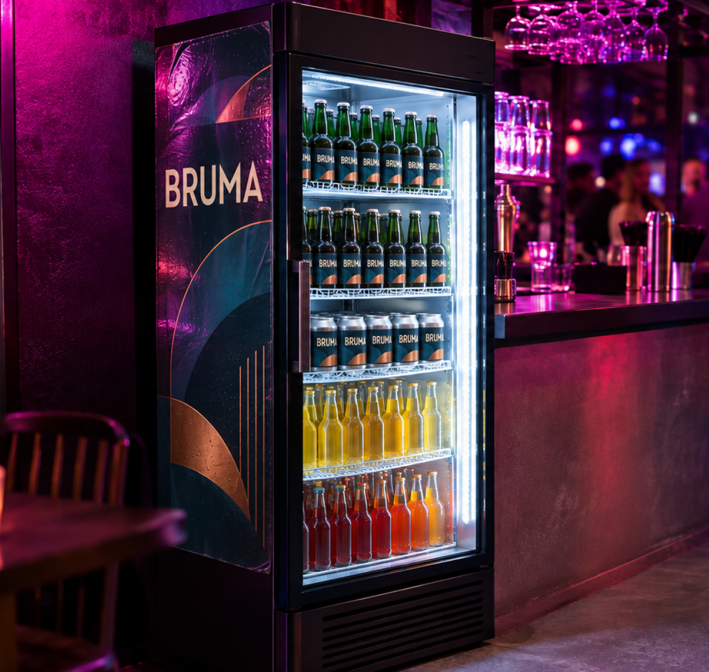
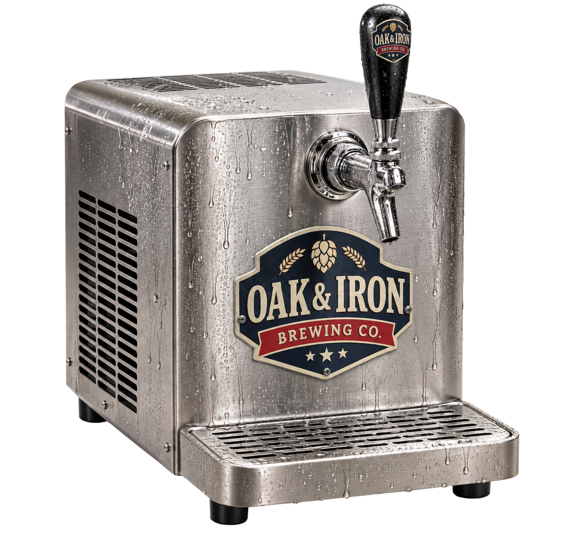

Comodato Cuidados antes de aceitar um equipamento
Por: Manoela Leão
com entrevistas de Mara Andrich
Geladeira, chopeira ou máquina de café sem pagar pela compra. Antes de aceitar o negócio, veja o que conferir sobre metas, exclusividade, manutenção e devolução antes de assinar.
Imagine um restaurante que está se preparando para abrir as portas. Depois de investir em reforma, cozinha, mobiliário e contratação de equipe, o empreendedor percebe que o orçamento está apertado. Mas ainda falta uma geladeira expositora para as bebidas.
É nesse momento que um fornecedor apresenta uma proposta: disponibilizar o equipamento em comodato, ou seja, emprestá-lo gratuitamente para uso temporário, com obrigação de devolução.
O restaurante evita o investimento na compra e preserva o caixa para outras necessidades. O fornecedor conquista espaço no ponto de venda e amplia as oportunidades de comercialização de sua marca.
A proposta parece vantajosa para os dois lados. Antes de aceitar, porém, é preciso conhecer as condições que acompanham o equipamento. Nas entrevistas a seguir, um advogado e um consultor de gestão para gastronomia explicam o que observar.
Advogado
Alcelyr Valle da Costa NetoDoutor e mestre em Educação e Novas Tecnologias pela UNINTER e especialista em Direito Processual Civil pela Universidade Cândido Mendes.
O que caracteriza um contrato de comodato?
O comodato é o empréstimo gratuito de um bem para uso temporário, com obrigação de devolução ao final do contrato. Disciplinado pelos artigos 579 a 585 do Código Civil Brasileiro, não transfere a propriedade.
Um exemplo recorrente é o fornecimento de freezers e refrigeradores por fabricantes de bebidas a bares, restaurantes e supermercados.
Quais condições e riscos o estabelecimento deve conhecer?
A depender da negociação, o fornecedor poderá exigir exclusividade, volume mínimo de compras, exposição da marca, localização estratégica dos produtos e conservação do equipamento.
Na exclusividade, o fornecedor pode exigir que somente seus produtos sejam comercializados naquele equipamento. Um exemplo é o freezer cedido por fabricante de cerveja com proibição de armazenar produtos concorrentes. Há também contratos que restringem significativamente a comercialização de produtos concorrentes. O estabelecimento pode ficar excessivamente vinculado ao fornecedor, limitando sua liberdade empresarial.
As metas de compra devem ser compatíveis com a realidade do negócio. Muitos contratos preveem multas por quebra de exclusividade, perda do equipamento e rescisão antecipada.
Publicidade

O comerciante deve conservar o bem com o mesmo zelo que teria com o seu patrimônio. Mesmo sem ser proprietário, pode responder pela perda em caso de furto, extravio ou dano, caso haja culpa ou negligência.
Frequentemente, o comodato está ligado a um contrato principal de fornecimento. Nesses casos, a quebra do fornecimento pode gerar a devolução imediata do bem. A retirada do equipamento poderá comprometer a operação do estabelecimento.
O que conferir no contrato antes de assinar?
É preciso ler o contrato integralmente, sem considerá-lo uma mera formalidade, e verificar:
O ideal é que o contrato seja previamente analisado por profissional especializado, garantindo equilíbrio contratual, segurança jurídica e preservação da autonomia do estabelecimento.
Baixar o checklist (PDF)
Consultor
Emerson FabrisConsultor de Gestão e Operações para Gastronomia.
Além do contrato, o que deve entrar na avaliação financeira?
É importante avaliar os preços dos produtos e as metas de compra para garantir que a parceria seja financeiramente vantajosa. O fornecedor ganha com a venda dos produtos e estabelece uma meta para isso. O estabelecimento precisa focar em vender para bater essa meta.
Como comparar o comodato com a compra do equipamento?
No plano de negócios, o investimento no equipamento é relacionado com as vendas necessárias para amortizá-lo. O estabelecimento precisa comparar essa métrica com a proposta do contrato de comodato.
Qual é o erro mais comum nessa decisão?
Muitos donos vão no impulso: “não preciso gastar e eles me dão a manutenção”. Esse é o maior erro. A mentalidade de aprender a administrar é fundamental.
Compare as alternativas
Responda às perguntas com os números da proposta que você recebeu. O resultado muda na hora.
Os números de partida são um exemplo da edição, com valores fictícios. Não integram as respostas dos entrevistados.
Se você aceitar o comodato
O equipamento é emprestado e a manutenção fica com o fornecedor. Em troca, você costuma pagar mais nas compras.
Por quantos meses dura o contrato de comodato?
Quanto você pagaria a mais por mês ao fornecedor?
Diferença de preço em relação a outro fornecedor, ou produto que você compraria só para bater a meta.
Se você comprar
Como você pagaria?
Em quantas parcelas?
Qual o valor de cada parcela, com juros?
Quanto custa o equipamento à vista?
Quanto você gastaria por ano com conserto e manutenção?
Por quantos anos o equipamento costuma durar?
Se não tem certeza de que vai usar o equipamento por todo esse tempo, coloque só os anos em que pretende usá-lo.
Neste exemplo, comprar sai mais barato: R$ 47 a menos por mês, ou R$ 1.120 nos 24 meses do contrato.
O comodato custa, por mês
R$ 150
O que você paga a mais nas compras.
Comprar custa, por mês
R$ 103
12 parcelas de R$ 560 (R$ 6.720) + R$ 3.200 de manutenção em 8 anos, divididos por 96 meses.
O comodato compensa enquanto o que você paga a mais ao fornecedor ficar abaixo de R$ 103 por mês.
No caixa: enquanto durarem as 12 parcelas, a compra tira R$ 593 por mês (parcela e manutenção). Depois, só a manutenção, R$ 33 por mês. No comodato, saem R$ 150 todo mês.
O custo de comprar é dividido pelos meses de vida útil do equipamento. A conta considera a manutenção do comodato por conta do fornecedor e as demais despesas iguais nos dois casos.
Use os preços e as condições da proposta recebida para fazer sua comparação. Se a meta de compras superar o que o estabelecimento consegue vender, considere também o dinheiro preso no estoque e o risco de perdas.
Por fim, confira o caixa: uma compra pode apresentar menor custo ao longo do tempo e ainda exigir um desembolso inicial que comprometa estoque, equipe e outras necessidades da operação.